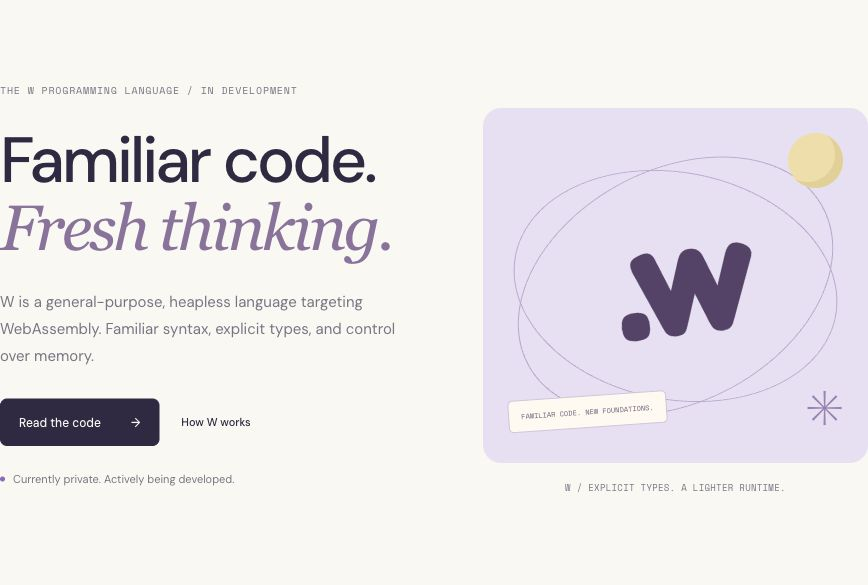
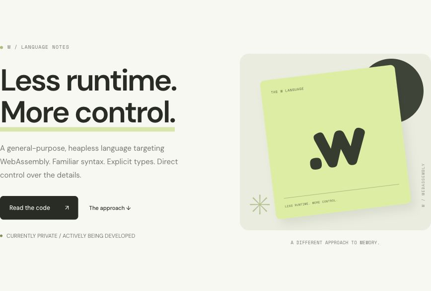
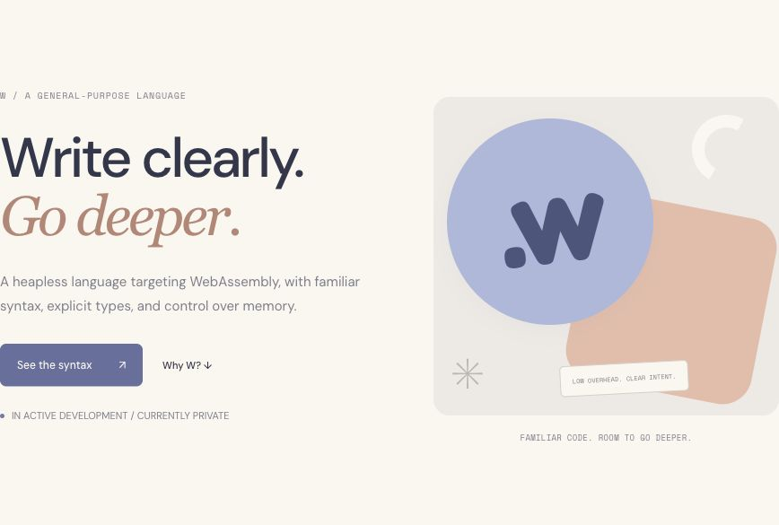

W / THREE REFINED DIRECTIONS
A modern take
on the ’90s.
Clean layouts, thoughtful typography, and a quieter use of retro color and geometry. Three different directions for the same language.

Hypertext ’96 ↗
Ivory, lavender, and expressive type. A calm editorial direction with subtle orbital graphics.
Explore this direction →
Copy Shop ’97 ↗
Chartreuse and charcoal, confident typography, and a restrained nod to independent print.
Explore this direction →
Memphis ’94 ↗
Soft blue and peach, rounded shapes, and a balanced, contemporary take on Memphis graphics.
Explore this direction →Practical copy. Friendly character.
Previous retro direction ↗